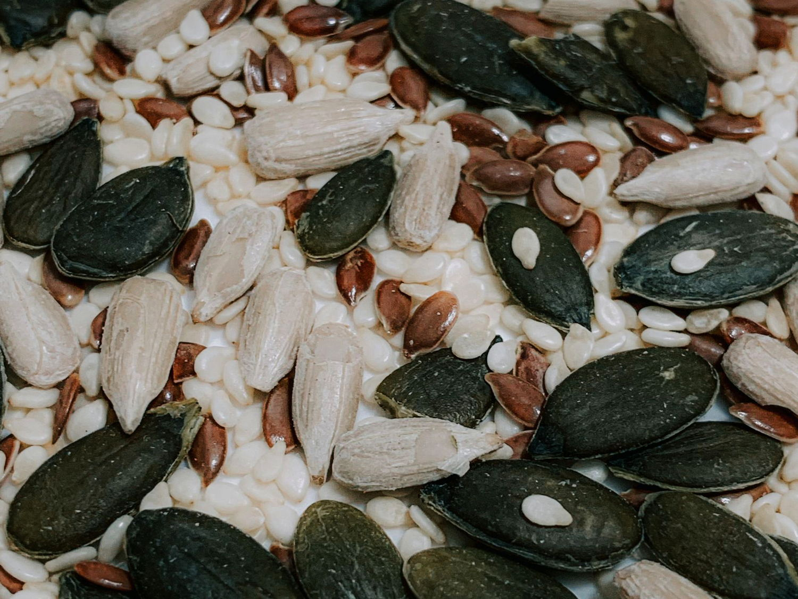

与其记住「缺什么补什么」，不如记住「吃这些就够了」。 营养密度衡量的是单位热量里能带来多少营养素——它比「热量高低」更值得关心。

点击任意一张卡片查看详细说明、关键营养素含量与食用建议。
「密度」是本站为便于比较而设的综合评分（0–100），参考单位重量中关键营养素的含量、生物利用度与膳食贡献度，用于横向排序，并非国际标准指标。实际选择食物时，还需结合个人口味、饮食文化与经济条件——能长期坚持的饮食结构，才是有效的饮食结构。